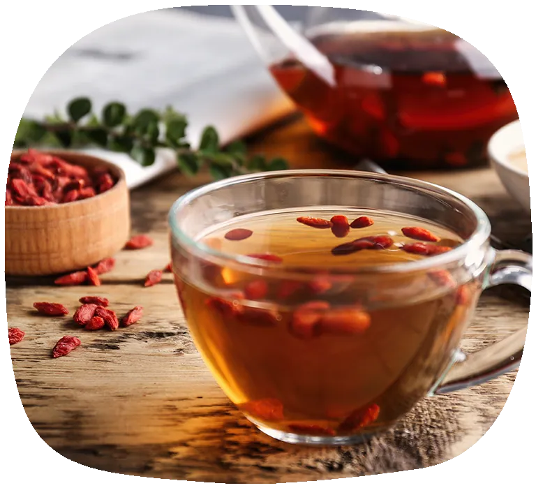

Élixirs naturels · 3 min de lecture
Élixir aux Baies de Goji : un puissant soutien naturel pour l’énergie, l’immunité et la longévité

Utilisées depuis des millénaires dans la médecine traditionnelle asiatique, les baies de goji sont reconnues comme un véritable super-aliment de longévité.
Riches en antioxydants, vitamines et minéraux, elles soutiennent l’organisme en profondeur et participent à l’équilibre global du corps.
Dans cet article, je te présente un élixir naturel à base de baies de goji, optimisé avec des ingrédients synergétiques soigneusement choisis pour maximiser leurs effets sur l’énergie, l’immunité et la vitalité cellulaire.
👉 Je tiens à vous rappeler une règle d’or que j’aime beaucoup et qui guide mes choix au quotidien : si la nature ne l’a pas créé, ne le buvez pas.
🍒 Recette de l’Élixir Vitalité aux Baies de Goji
Ingrédients (synergie optimale)
1 cuillère à soupe de baies de goji séchées
200 ml d’eau chaude (non bouillante)
1 cuillère à café de gingembre frais râpé
1 cuillère à soupe de miel brut (idéalement miel de thym ou d’acacia)
Le jus d’½ citron (optionnel mais fortement recommandé)
Pourquoi cette synergie fonctionne ?
Les baies de goji nourrissent et protègent les cellules.
Le gingembre stimule la circulation et améliore l’assimilation des nutriments.
Le miel soutient l’immunité et apaise le système digestif.
Le citron booste l’absorption des antioxydants et renforce l’action détox.
☕ Préparation
Fais tremper les baies de goji dans l’eau chaude pendant 10 à 15 minutes.
Ajoute le gingembre râpé.
Incorpore le miel et le citron.
Mélange doucement et bois tiède, en prenant le temps.
💪 Bienfaits essentiels de l’Élixir aux Baies de Goji
Puissant antioxydant naturel
Les baies de goji protègent les cellules contre le vieillissement prématuré et le stress oxydatif.Renforce l’immunité
Riches en vitamine C, zinc et polysaccharides, elles soutiennent les défenses naturelles.Boost d’énergie douce et durable
Idéal en cas de fatigue chronique, sans effet excitant ni chute brutale.Soutien de la vision et de la peau
Les caroténoïdes contribuent à la santé des yeux et à l’éclat de la peau.Équilibre global du corps
Cet élixir nourrit, protège et harmonise l’organisme.
🔬 Pourquoi cet élixir est-il si efficace ?
Les baies de goji sont l’un des rares aliments à agir à la fois sur l’énergie, l’immunité et la longévité.
Associées à des ingrédients chauffants et assimilables comme le gingembre et le miel, leurs nutriments deviennent plus biodisponibles.
👉 Résultat : une action profonde, progressive et durable sur tout le corps.
⏰ Astuce d’utilisation
À consommer 1 fois par jour, de préférence le matin ou en début d’après-midi.
Peut être pris en cure de 3 à 4 semaines.
Évite l’eau bouillante pour préserver les antioxydants.
👥 À qui s’adresse cet élixir ?
À ceux qui veulent ralentir le vieillissement cellulaire
À ceux qui cherchent une énergie stable et naturelle
À ceux qui souhaitent renforcer leur immunité durablement
À toute personne en quête d’un rituel bien-être simple et ancestral
⚠️ Important
Ne pas dépasser les doses recommandées.
En cas de traitement anticoagulant ou de condition particulière, demande conseil à un professionnel de santé.
Privilégie des baies de goji bio et de qualité contrôlée.
✍️ À propos de l’auteur
Je suis également auteur de livres bien-être sous le pseudo Chest0 JM.S.
Je crée et partage des guides pratiques, des élixirs naturels et des programmes santé accessibles à tous, pour accompagner chacun vers une meilleure vitalité physique, mentale et alimentaire.
📚 Mes ouvrages sont disponibles sur Amazon pour celles et ceux qui souhaitent aller plus loin dans leur transformation bien-être.
🔗 Retrouve tout mon univers bien-être ici :
👉 https://linktr.ee/Chest00
✨ Nourris ton corps avec sagesse. La nature détient déjà les clés de l’équilibre et de la longévité.
👉 À lire aussi : Élixir anti-rhume
Plus de 40 recettes d'élixirs dans les livres Chest0.
Voir les livres